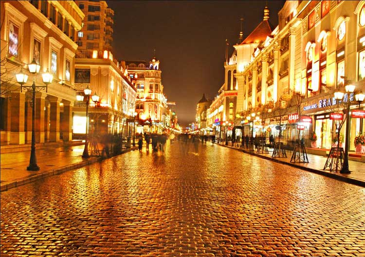
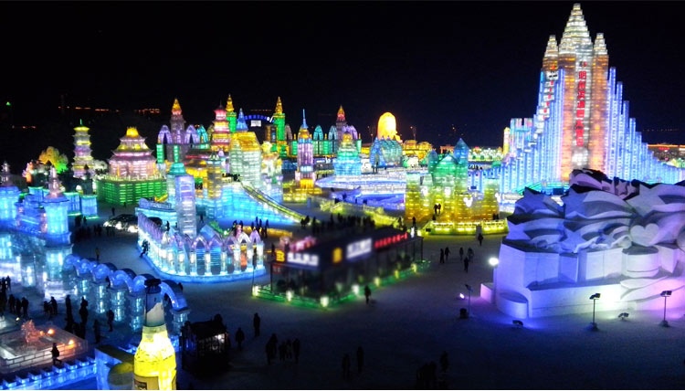

“遥映人间冰雪样，暗香幽浮曲临江。遍识天下英雄路，俯首江左有梅郎。”很多年前小编就已下定决心不看国产剧，但《琅琊榜》一再挑战小编我的底线，最后竟让我变成了一个没原则的人！剧中那位“得之可得天下”的麒麟才子，那个帅了很多年、今年格外帅的胡歌，不知道让多少花痴口水流了一地。
如果可以，你想变成梅宗主身边的谁？青梅竹马的郡主？寸步不离的飞流？还是好到一起弯的靖王？No，No，No，我们最想变成的，其实是宗主怀中的暖手炉，被他时刻捧在手心上。而宗主所在的江左盟，又是极其阴冷的一个地方，那冷简直可以和冰城哈尔滨媲美。
北方城市少有像哈尔滨那般的浓烈刚劲。浓烈体现在这个城市的气质上，城市的风貌和市民的性情无不洋溢着潇洒的豪迈。而刚劲则体现在建筑中，繁复而华丽的巴洛克式建筑在哈尔滨中央大街随处可见，但它们却没有丝毫的柔美，在寒冷空气的荡涤淬炼下显得更加的沉稳有力。
哈尔滨是一个外表粗犷而内心细腻的城市，人们忍耐了这个城市的严寒，这个城市便给了人们一个色彩斑斓的童话世界。1月5日开始的哈尔滨冰雪节就是哈尔滨人狂欢的盛会。
哈尔滨国际冰雪节是我国历史上第一个以冰雪活动为内容的国际性节日，持续一个月。这个节日走出了国门，和日本札幌雪节、加拿大魁北克冬季狂欢节和挪威奥斯陆滑雪节并成世界四大冰雪节。
冰雪节期间举办冬泳比赛、冰球赛、雪地足球赛、高山滑雪邀请赛、冰雕比赛、国际冰雕比赛、冰上速滑赛、冰雪节诗会、冰雪摄影展、图书展、冰雪电影艺术节、冰上婚礼等。
当地斥巨资在松花江上修建了冰雪迪斯尼乐园，哈尔滨冰雪大世界、斯大林公园会展出大型的冰雕，在太阳岛举办雪雕游园会，兆麟公园会举办规模盛大的冰灯游园会等活动。在这样一个色彩斑斓的童话世界，循着干净通透的冰雕，每个人都变成了快乐的小孩子，纷纷惊呼“一个月的节日哪里够玩”！
1、哈尔滨国际冰雪节1月5号开始，时间大概持续一个月；
2、冰雕是冰雪节最绚烂的主题，1——2月出游强烈建议抛开繁杂的生活，去冰城的童话世界打个盹。